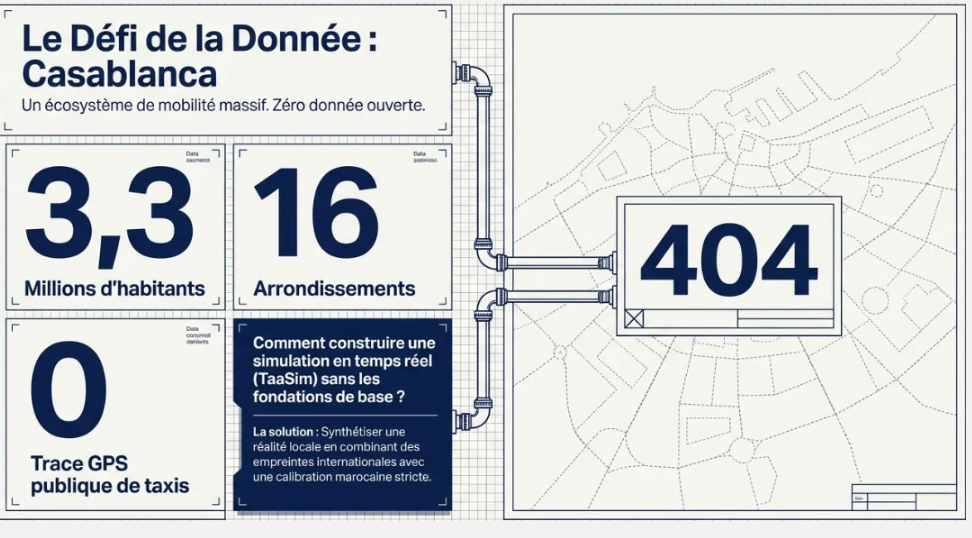
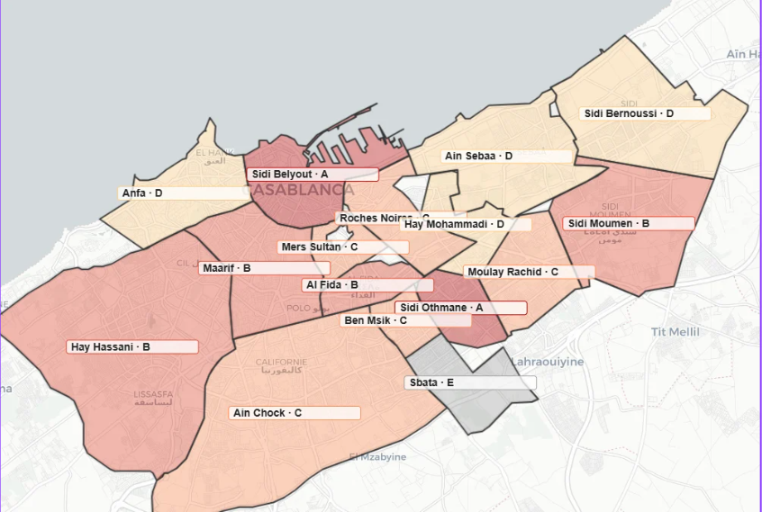
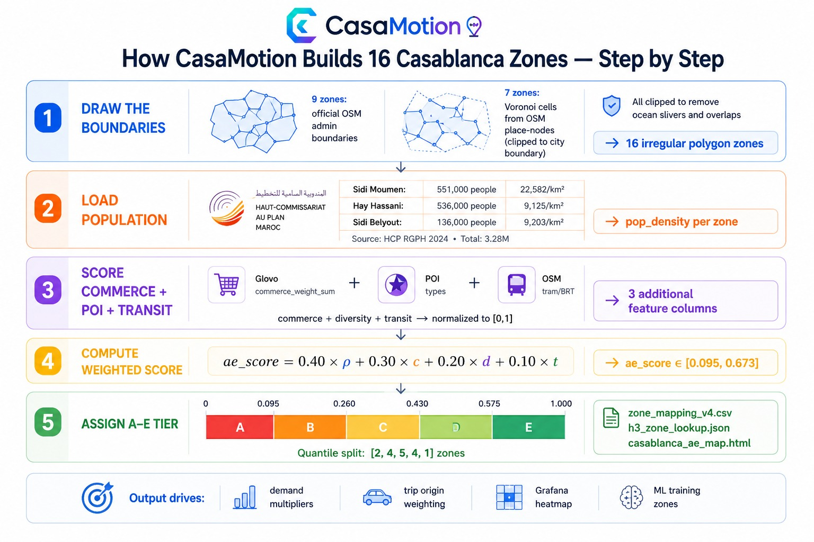
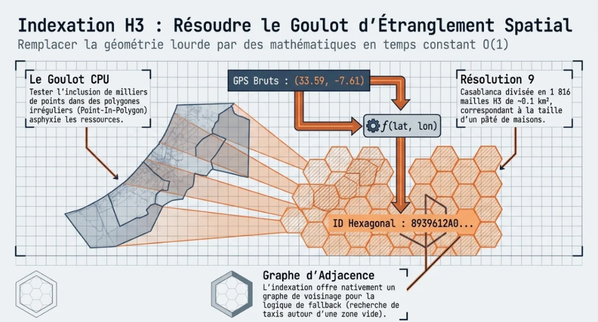
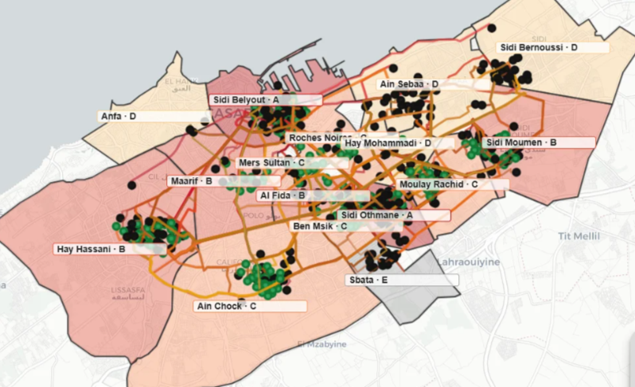
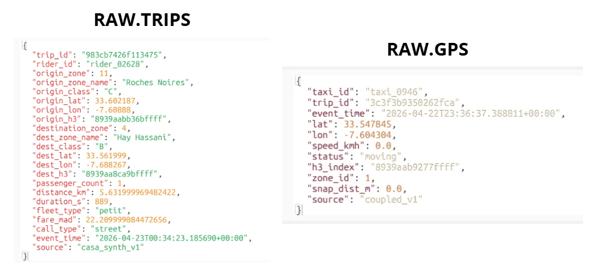
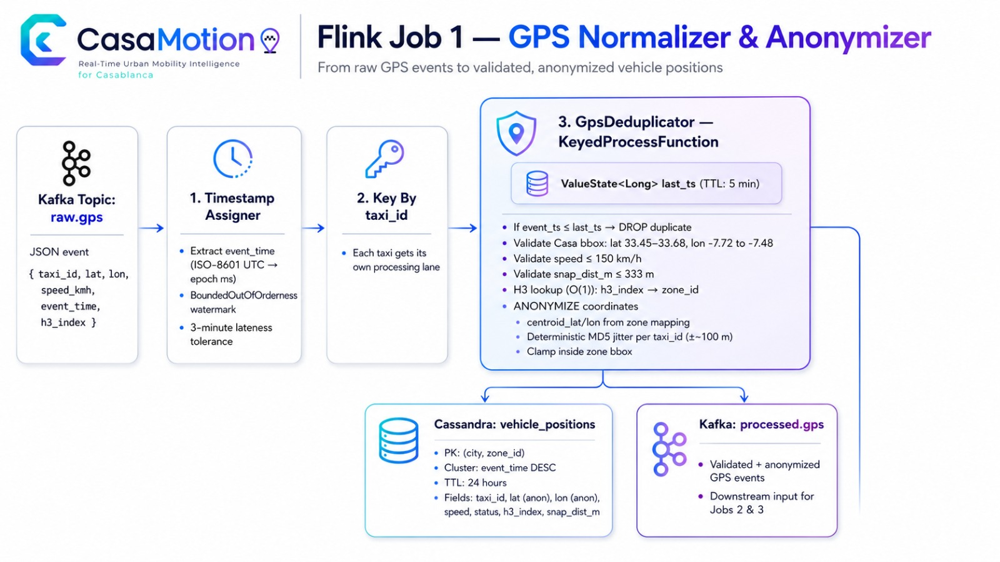
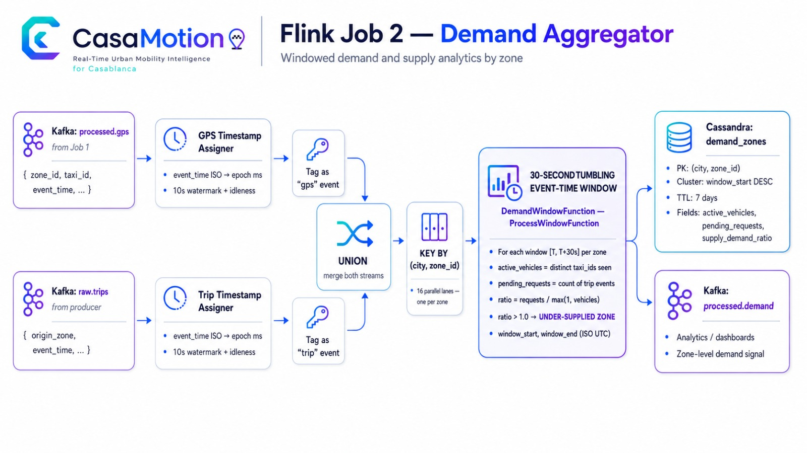
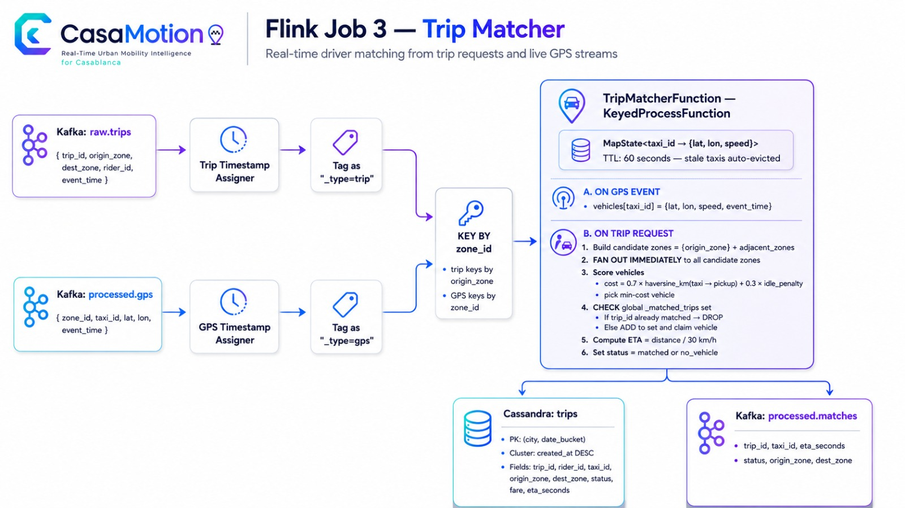

Real-Time Urban
Mobility Intelligence
A streaming data platform for Casablanca, Morocco — live rider–vehicle matching, demand forecasting, and city-scale observability.
KafkaFlinkSpark
CassandraMinIOFastAPI
GrafanaDocker
Kappa architecture · 16-container stack · ML demand forecasting · 6 delivery weeks + Phase-4
The ProblemCasablanca: 4M people, zero shared mobility data
- No shared data layer — grand/petit taxis & minibuses run with no GPS, booking, or schedule
- Demand blindness — drivers cruise empty; riders wait with no visibility
- No interoperability — ONCF rail, BRT and taxis share no data or ticketing
- Cash-only — no trip history, no analytics, no personalization
- Underserved periphery — Bouskoura, Sidi Moumen grow faster than routes
The core problem is not a shortage of vehicles — it is the absence of a data layer connecting supply to demand.
The Data Challenge
Solution & ObjectivesTreat urban mobility as a data-engineering problem
- Dynamic rider–vehicle matching — nearest taxi in under 5 seconds
- Demand surge forecasting — trips per zone predicted 30 min ahead
- City-wide visibility — live heatmaps, KPI dashboards, coverage gaps
- Data-driven planning — find zones where demand exceeds supply
Cahier des charges: real-time ingestion · event-time stream processing · serving DB · batch ML · dashboards · secured API.
Architecture · v2 — Kappa, Kafka is the single source of truth Why These Technologies
Why These TechnologiesEvery choice has a documented rationale
| Choice | Over | Why |
|---|---|---|
| Kappa | Lambda | One processing layer; Kafka is replayable |
| Kafka KRaft | + ZooKeeper | One fewer service, faster failover |
| Flink | Kafka Streams / Spark Streaming | True event-time windows, sub-second latency |
| Cassandra | Postgres / Redis | Query-driven partitioning, native TTL, write-optimized |
| MinIO | HDFS | S3 API for Spark + Flink + Connect; no NameNode |
| JSON on wire | Avro | Debuggable in Kafka UI, no schema registry |
| H3 res-9 lookup | point-in-polygon | O(1) dict lookup vs O(16) ray-cast |
Delivery Timeline
Week 1 — Foundation
Stack · Datasets · Zone Geography · Producers
Week 1 · FoundationStand up the platform and prepare the geography
- Docker Compose stack — Kafka, MinIO, Cassandra, Flink, Spark, Grafana, Jupyter
- Datasets → MinIO — Porto (1.8 GiB) + NYC TLC
- Porto EDA — 1.7M trips, GPS polylines
- Zone remapping — Porto bbox → Casablanca, 16 arrondissements (v4)
- Kafka producers v1 — GPS + trip requests
Problem: Porto coordinates are in Portugal; needed a faithful transform respecting 16 real arrondissement shapes.
Solution: linear bbox transform + H3 res-9 lookup (
Solution: linear bbox transform + H3 res-9 lookup (
h3_zone_lookup.json) for O(1) zone assignment.Zone Remapping · Step 1How we draw Casablanca's 16 zones
| Approach | Why rejected |
|---|---|
| Uniform 500 m grid | Splits real neighbourhoods |
| H3 res-8 hex (~260) | Too many, no admin meaning |
| Irregular polygons ✓ | Match real admin boundaries |
- 9 zones = official OpenStreetMap admin-boundary polygons
- 7 zones = Voronoi cells on named OSM place-nodes (northern suburbs), clipped to the urban boundary
- All polygons clipped to remove ocean slivers / overlaps
- Output:
zone_mapping_v4.csv+casablanca_ae_map.html
Honesty note: the 7 Voronoi zones are a demand-aggregation scaffold, not a cartographic claim — every downstream stage treats all 16 as abstract
zone_ids.Casablanca · 16 Arrondissement Zones
Zone Remapping · Step 2The A–E activity score — a weighted multi-source formula
| Feature | Source | Weight |
|---|---|---|
| Population density ρ | HCP 2024 census | 0.40 |
| Commerce weight c | Glovo | 0.30 |
| POI diversity d | Glovo | 0.20 |
| Transit hubs t | OpenStreetMap | 0.10 |
- All four min-max normalised to [0,1]
- Population dominates (0.40): demand scales with residents/km²
- Quantile cut [2,4,5,4,1] → A = dense CBD … E = lowest
- Reconciles to HCP's 3.28 M
Zone Build Pipeline — End to End
H3 Indexing — the Spatial Backbone
Porto Simulation StrategyWarping real GPS onto Casablanca roads
- LOAD — Porto polylines; filter 1.5–18 km, 3–30 min
- SAMPLE — stratify by length → 500 trips
- ASSIGN — A–E transition matrix → zone by population
- AFFINE — linear Porto bbox → Casa bbox (cahier transform)
- ANCHOR — pull to centroid (α=0.80) + jitter σ≈160 m
- OSRM — route on real Casa street network
- PERSIST —
curated_trajectories_v4.parquet
Why OSRM over in-process A*: zero zigzags, full OSM driving profile, no 400 MB graph in memory, cached for warm re-runs.
Live map: notebooks/casablanca_trajectories_v4.html
Warped GPS Routes on Casablanca Roads
![Population + OSM drive realistic demand: HCP 2024 population, Glovo commerce and OSM transit feed the A–E activity score and demand multipliers; OSM admin boundaries, road network and NYC temporal fingerprint feed 16 zone polygons, population-weighted origin sampling, road-snapped Porto trajectories and the hourly/DoW curve — all chaining into casa_trip_requests (500K trips, 90 days). Origin weight origin_p[z] = pop_2024[z] × ae_mult[z]; destinations from tier T±1; validation 8/8 (A/E ratio ≈ 3.6×, twin peaks 08:00/18:00, Fri-high/Sun-low, 70/30 petit/grand split).](assets/ss.png) Week 1 · Deep Dive
Week 1 · Deep DiveTwo producers replay Casa traffic into Kafka
vehicle_gps_producer.py→ raw.gps, key=taxi_id- COUPLED: interpolate along OSRM polyline, ±20 m noise, 5% blackout, road-snap
- H3 res-9 → zone, ring fallback r=1..5
trip_request_producer.py→ raw.trips, key=origin_zone- Hourly multiplier (peaks 08/18), petit/grand split, MAD tariffs
- Wire: JSON,
acks=all,retries=3
Producers → raw.gps & raw.trips
Delivery Timeline
Week 2 — Storage Layer
Kafka Connect · Cassandra Schema · ADR v1
Week 2 · Storage LayerPersist the streams and lock the data model
- Kafka Connect S3 Sink — raw.gps + raw.trips →
s3://kafka-archive/YYYY/MM/DD/HH/ - Cassandra schema — 3 tables, INSERT + SELECT tested · ADR v1 written
| Table | Partition key | Clustering | TTL |
|---|---|---|---|
vehicle_positions | (city, zone_id) | event_time DESC | 24 h |
demand_zones | (city, zone_id) | window_start DESC | 7 d |
trips | (city, date_bucket) | created_at DESC | — |
Problem: an unbounded trips partition grows forever. Solution:
date_bucket caps each partition (< 100 MB guidance).
Delivery Timeline
Week 3 — Real-Time Processing
Flink Jobs 1–3 · Matching · Anonymization
Week 3 · Real-TimeThree PyFlink jobs turn raw events into serving state
- Job 1 · GPS Normalizer — raw.gps → validate, dedup, H3 zone, road-snap/anonymize →
vehicle_positions+ processed.gps - Job 2 · Demand Aggregator — processed.gps + raw.trips → 30 s tumbling windows →
demand_zones - Job 3 · Trip Matcher — keyBy zone, MapState, adjacent fan-out + dedup →
trips - Checkpoints: RocksDB, EXACTLY_ONCE, 60 s → MinIO
- Watermarks: 3-min (Job 1); 10 s + idleness (Jobs 2/3)
Flink · Job 1 — GPS Normalizer & Anonymizer
Flink · Job 2 — Demand Aggregator
Flink · Job 3 — Trip Matcher
Week 3 · Deep DiveSub-second matching + privacy by design
- Cost:
0.7·haversine_km + 0.3·idle_bonus - Adjacent fan-out: neighbours compete in parallel; first free taxi wins via shared
Set<trip_id>dedup - Match P95 ≈ 1.2 s (target < 5 s)
- Anonymization: snap to centroid + hash jitter — raw lat/lon never persisted
1.2s
P95 match latency
21%
matched · fleet 2000 @ 50×
Problem: match rate only 4.2% (fleet 500, 10×). Solution: scaled to fleet 2000 @ 50× → 21%; remaining no_vehicle is density-bound.
Delivery Timeline
Week 5 — Batch ETL (Spark)
Porto + NYC → Curated Parquet · Offline only
Week 5 · Batch ETLSpark cleans donor datasets into curated Parquet
- Porto ETL — 1,710,670 → 1,660,794 valid →
s3://curated/trips/(43 MiB) - NYC TLC ETL — 9.38M → 8.81M → 192K demand rows
- KPI analytics — 6 datasets (trips/zone, hourly, heatmap, gaps…)
- Kappa rule: NYC is batch-only — it never enters Kafka
Problem: Spark image lacked numpy; jobs failed. Solution: install numpy at master/worker startup; bump RAM (worker 4g, master 3g).
Live: Spark Master UI · http://localhost:8080
The NYC Data StoryNYC = demand fingerprint, never streamed
- Role 1 · Trip synthesis — borrow NYC hourly curve, DoW weights, OD frequency → 500K Casa trips / 90 days
- Role 2 · Batch ETL exercise — prove Spark handles multi-GB data (cahier §2.2)
- Re-anchored to Casa with HCP 2024 + Glovo
- Validation 8/8 (70.6% petit / 29.4% grand, A/E 3.65×)
Why New York? There is no open Casablanca taxi dataset. We borrow patterns, not values, then re-anchor to Casa geography. NYC never streams and never trains the forecaster.
Delivery Timeline
Week 6 — Machine Learning + API
Features · GBT Model · FastAPI Serving
![Week 6 machine-learning pipeline: 1) Input s3://curated/trips/ (Porto trips); 2) Feature engineering — hour_of_day, day_of_week, is_weekend, is_peak, slot_of_day, zone_idx, demand_lag_1d, demand_lag_7d, rolling_7d_mean, supply* removed for leakage → 183,981 rows; 3) Temporal split at 2014-05-01 → Train 151,911 / Test 32,070 rows; 4) GBTRegressor (Spark MLlib, maxDepth=5, maxIter=50, stepSize=0.1); 5) Model output saved to s3://mldata/models/demand_v1/ with RMSE 3.71, MAE 2.11, R2 0.75, -45.8% vs baseline.](assets/MLARCHITECTURE.png) Week 6 · Feature Engineering
Week 6 · Feature EngineeringBuild a leakage-free feature matrix (183,981 rows)
- Input:
s3://curated/trips/→ Output:s3://mldata/features/ - Target:
demand= trips per zone per 30-min slot (48 slots/day) - Features: hour_of_day, day_of_week, is_weekend, is_peak, slot_of_day, zone_idx, demand_lag_1d, demand_lag_7d, rolling_7d_mean
The critical fix: an earlier draft included
supply and supply_demand_ratio — both from the same 30-min slot as the target → label leakage. Removed both; kept only retrospective lag/rolling features. Temporal split (not random) at 2014-05-01.Selection vs ImportanceTwo different concepts — we did both
- Selection (before): allow a feature only if knowable in advance & non-leaking → removed
supply* - Importance (after): GBT
featureImportancesshows what trees split on
| # | Feature | Importance |
|---|---|---|
| 1 | demand_lag_1d | ~0.38 |
| 2 | rolling_7d_mean | ~0.24 |
| 3 | hour_of_day | ~0.17 |
Week 6 · Model ResultsGBT beats the baseline by 45.8%
3.71
RMSE · vs 6.84 naive
0.75
R²
2.11
MAE
−45.8%
vs baseline
- Algorithm: Spark MLlib
GBTRegressor(maxDepth=5, maxIter=50, stepSize=0.1) - Pipeline: StringIndexer → VectorAssembler → GBTRegressor · temporal split Train 151,911 / Test 32,070
- Every one of 16 zones beats the baseline
Cross-Cutting
Storage · Observability · Deployment
MinIO · Grafana · Docker Compose · Testing
Storage · Data LakeOne S3 lake, four lifecycle zones
| Bucket | Writer | Reader |
|---|---|---|
raw/ | manual upload | Spark ETL |
curated/ | Spark ETL, Flink ckpt | Spark ML, recovery |
mldata/ | Spark ML | FastAPI |
kafka-archive/ | Kafka Connect | Spark replay |
Why MinIO not HDFS: single stateless binary, one S3 API for all engines, no NameNode.
MinIO console · http://localhost:9001
Frontend · Public SiteA public front door for the live platform
- Marketing-grade landing built in pure HTML/CSS — no framework, instant load
- Communicates the product story: live GPS, trip matching, demand forecasting, dashboards
- Clear calls-to-action and a guided narrative for non-technical stakeholders
- Self-contained — opens directly from the repo, same design language as the deck
Frontend · presentation/landing.html
Future · Week 7–8What's next
- Security hardening: rotate JWT_SECRET, HTTPS/TLS, Kafka SASL + topic ACLs
- Integration tests: pytest + GitHub Actions, assert P95 < 5 s over 200 trips
- SLA load test: Locust, 20 RPS, forecast API p99 < 500 ms
- Checkpoint-recovery demo: kill a TaskManager, prove resume from MinIO, no duplicates
- Idle-cruising GPS behavior to raise match rate further
- Week 8: live demo, pitch deck, technical report
ConclusionFrom fragmented taxis to a live data platform
- Problem solved: Casablanca's supply & demand now share one real-time data layer
- End-to-end pipeline: Producers → Kafka → 3 Flink jobs → Cassandra → Grafana & API
- Real intelligence: H3 demand zoning, sub-5 s rider–vehicle matching, ML forecasting
- Engineered to last: Kappa architecture, replayable streams, reproducible in one command
16
containers, one
docker compose up3
Flink jobs on a single replayable bus
≈1.2 s
trip-match latency (target < 5 s)
Thank you
Real-time mobility intelligence for Casablanca · Kappa architecture · 16 containers · ML-backed
github.com/mohamedamineelabidi/CasaMotion
KafkaFlinkSpark
CassandraMinIOFastAPI
Appendix · Service URLsWhere everything runs
| Service | URL | Creds |
|---|---|---|
| Grafana | http://localhost:3000 | admin / admin |
| Flink UI | http://localhost:8081 | — |
| Spark Master | http://localhost:8080 | — |
| MinIO Console | http://localhost:9001 | minioadmin / minioadmin |
| Kafka UI | http://localhost:8090 | — |
| FastAPI Swagger | http://localhost:8000/docs | JWT |
Defense Q&A flashcards (15 questions) are in
presentation/qa.html.